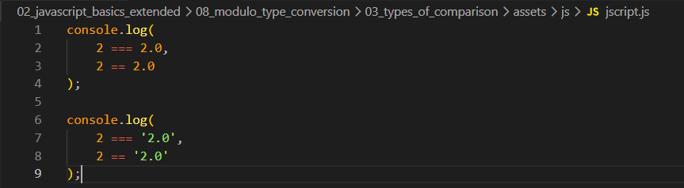
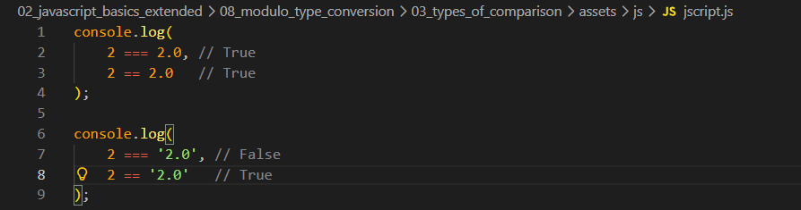
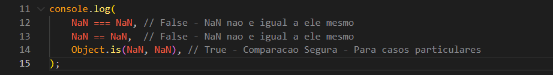

Types of Comparison ( == vs === )
Intro
Aqui iremos ver sobre os dois tipos de comparaca(== e ===).
Aqui iremos ver sobre os dois tipos de comparaca(== e ===).

No JS temos 3 tipos de comparacoes, porem os mais comuns e mais utilizados, sao sempre esses mostrados em nosso codigo acima.
Ele faz algo conhecido como comparacao estrita, onde ambas as partes precisam ser do mesmo tipo de dado para fazer a comparacao. Nesse caso mesmo um valor sendo 2 e o outro 2.0 = ambos os casos sao numbers e pode ser feito a comparacao e sao identicos mesmo com o .0 teremos como resultado true.
É uma comparacao ampla, quer dizer basicamente iremos comparar os dois valores, sem considerar sua tipagem.

